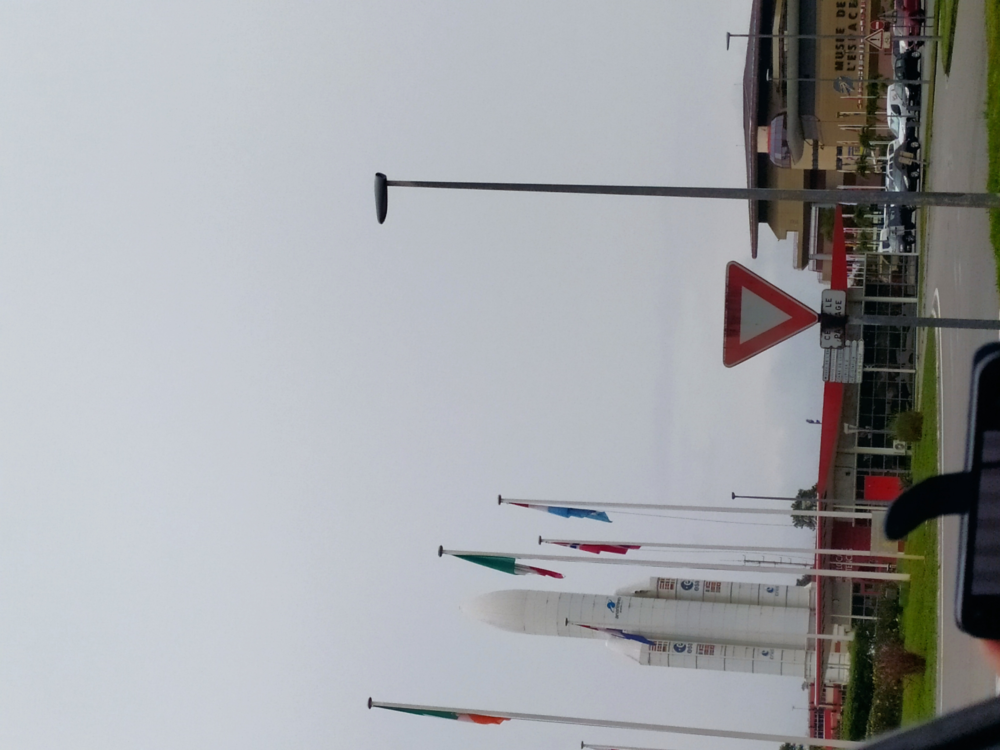
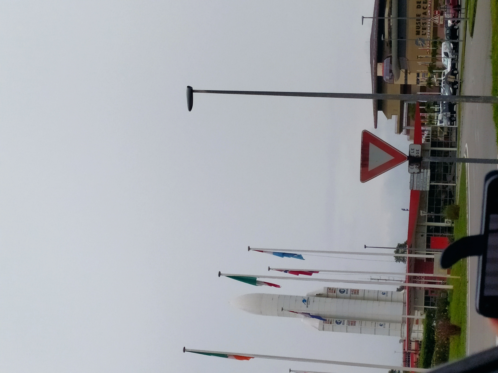

Le grand littoral spatial de Kourou Kourou
Les 3 lacs sont artificiels, c'est une ville fabriquée. Avant, c'était un village de 3000 habitants.
On s'attendait à une ville futuriste axée sur l'aérospatiale, mais à part le rond-point et la fausse fusée…
 

Il faut forcément avoir une voiture et parfois même avec une voiture, il y a des embouteillages.
Pour survivre, les animaux entrent par les câbles au bord de la route, alors que sous terre ça casse pas et ça peut faire un corridor écologique. Les micro-projets, il faudrait les multiplier à Kourou aussi. Ici, on retrouve des tama et des kwendou morts sur la route régulièrement.
Les enfants ne sortent pas et ne connaissent pas les animaux, je dois leur montrer les images. Leurs familles sont pauvres et ne vont même pas à la plage, ne connaissent pas le fleuve Kourou.
Il faut protéger toute la ville, les gens jettent tout n'importe où. Faut protéger les fleuves, par exemple !
Quand j'étais petite, on n'allait pas dans la nature en mode loisirs. La première fois que je suis allée dans un carbet, c'était en rentrant de la métropole, avec des métropolitains !
Avant, je faisais du sport, de la pirogue, pendant 4 ans. Y avait des compétitions de pirogues. Mais y en a plus trop maintenant, pourtant c'était un événement suivi à Kourou.
"Les gens du CSG ont ne les connaît pas. Pourtant, je suis née à Kourou, c'est comme s'il y'avait une ville dans la ville Le parc spatiale est coupé du reste et vie sa vie avec sa propre police et pompier."
Je fais des restau, mais il n'y a pas trop d'activités ici. J'ai fait un peu de sport avant
Les jeunes sont souvent a vélo et se promènent mais ils sont livrés à eux même, ils sont pas vraiment encadrés. Et en vrai il n'y a pas grand chose a faire !! Un peu le ciné, le resto.
Les gens ont potentiellement tout chez eux et s'ils ont rien ils sont habitués à ne rien avoir.
Le grand littoral de Macouria-Monsinéry Soula Monsinéry
"Tout est bien pensé ici, la circulation, les magasins, on a même une téléconsultation médicale à la pharmacie, et les gens s'y plaisent dans les immeubles. Ils aiment bien bétonner, et en saison sèche ils brûlent, c'est comme ça. "
"Pourquoi c'est des toits en tôle, on va crever de chaud là-dessous ?"
"Je vois l'évolution, on dirait que les bâtiments dépérissent. On venait tous les deux ans et depuis 20 ans, on voit qu'il y a de l'évolution, ça construit, mais mettre le plus beau bâtiment sur terre si c'est pas entretenu, ça va dépérir."
"Les routes sont dangereuses, les gens roulent mal, c'est pas éclairé, il faut des éclairages avec des panneaux solaires et y'a des embouteillages, alors que ça c'est dans les grosses villes."
"Le pont du Larivo à 17 h, c'est pas normal qu'on soit bloqué, il faut une double voie pour les points."
"Un excès d'urbanisation, que du béton, on est étouffé et ici c'est le contraire. Il y a de l'espace, mais ça pêche dans l'aménagement. Les bords des routes, y'a jamais de trottoirs, la végétation pousse, ça capte les déchets. On sent que les piétons sont pas à l'aise et vont sur la route."
« Une plage comme ça, on peut tout y faire : y a un bout de verdure qui traîne, ça peut avoir un charme, mais il faut faire comme aux Antilles. Il y a des tortues qui viennent ici alors aidons-les, ça sera attractif. »
« Il y a une législation pas toujours adaptée à la Guyane : la protection du littoral a un sens en France, mais ici y a la forêt derrière et le littoral à deux minutes. Donc si on applique ces règles, ça n'a pas de sens. »
Les espaces verts sont pas entretenus, les rosiers et caniveaux, c'est pas entretenu. Faut que ça soit une carte postale.
Sur les abords de route c'est pas dégagé, y a des voitures, des frigos… ils déposent tout n'importe où.
L'île de Cayenne Cayenne Remire-Montjoly
"Avant, je voyais le pont de Kourou d'ici. Mon pote m'appelait quand il passait sur le pont et faisait des appels de phare. Maintenant, avec les palétuviers, on le voit plus."
"J'aime pas les bidonvilles. Ici, ils sont un peu cachés, mais c'est sale, ça laisse les ordures !"
"Il faut rénover les maisons créoles, c'est important de mettre en avant le patrimoine guyanais."
"J'ai l'impression de passer ma vie dans les embouteillages et il faut une voiture, les autres transports sont pas fiables."
"Je préférais Kourou, ça fait plus vacances, pas de circulation, plus familiale. Tout se passait bien en vélo, les enfants ne circulaient que comme ça. Ici, y a trop de circulation, des embouteillages, etc."

"Certaines zones deviennent polluées avec le temps. À côté de chez moi, y avait un endroit avec des nénuphars et l'eau qui les entoure est pleine de déchets. Ça me dégoûte."

"Malouin, c'est une zone de non-droit, vous devriez pas vous promener trop ici, des jeunes peuvent vous braquer surtout après 18h."
"Beaucoup sont descendants de bagnards mais ne cherchent pas à savoir et ça se voit sur le patrimoine qui tombe en ruine."
"Ça ressemble à Miami. Ici, c'est comme le système Anglo-Saxon. Ce sont des zones faites pour ça, tu viens manger, ou à la salle. Au Suriname, c'est pareil, ça regroupe tout, restau et hôtels."

Les îles et îlets
"Le sémaphore de la tour Dreyfus, rien n'est expliqué, les îles du Salut pareil. Si tu te renseignes pas seul, tu ne te rends pas compte du patrimoine et de son intérêt."